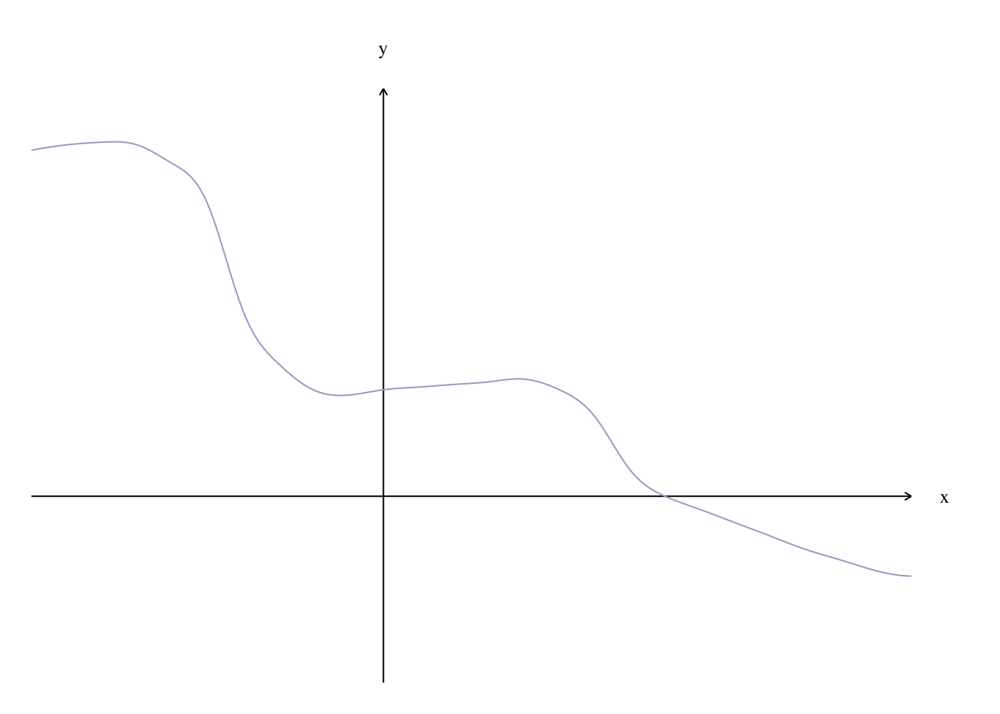
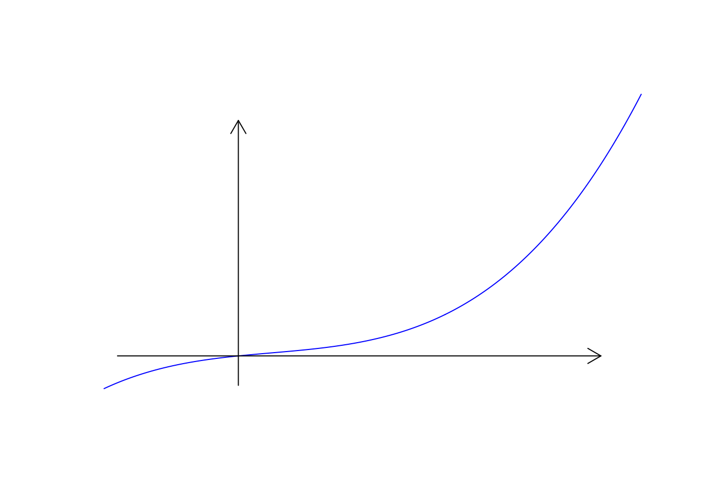

################## 画带箭头的坐标轴## estimate curvex<-seq(-1,1.5,0.1);y<-c(1.3,1.32,1.33,1.32,1.25,1.1,0.7,0.5,0.4,0.38,0.4,0.41,0.42,0.43,0.44,0.4,0.3,0.1,0,-0.05,-0.1,-0.15,-0.2,-0.24,-0.28,-0.3);f<-splinefun(x,y);## calculate precise points along estimated curvex<-seq(-1,1.5,0.01);y<-f(x);## precompute limitsxlim<-c(min(x),max(x));ylim<-c(min(y)-0.4,max(y)+0.2);## set global plot paramspar(xaxs='i',yaxs='i',mar=c(1,1,3,3)+0.1); ## "internal" axis spacing, meaning no extended range, and slightly adjust margins## draw plotplot(NA,xlim=xlim,ylim=ylim,axes=F,ann=F); ## set plot bounds, no default ornamentsarrows(c(0,xlim[1]),c(ylim[1],0),c(0,xlim[2]),c(ylim[2],0),0.05); ## draw custom axesmtext('y',3,1,at=0,las=1,cex=0.8,family='serif'); ## y labelmtext('x',4,1,at=0,las=1,cex=0.8,family='serif'); ## x labellines(x,y,col='#aaaacc'); ## draw line on top

方法二：
Show the code
## Simulate your data:x<-seq(-1, 3, by=0.01)y<-0.5*x-0.3*x^2+0.4*x^3## Plot the polynomial function, removing axis ticks and bounding box,## as well as the axis labels:plot(x, y, type="l", xaxt='n', yaxt='n', bty='n', xlab='', ylab='', col="blue")# 画图## Next add in your axis arrows:# 适当缩小坐标轴 small=0.9arrows(min(x)*small, 0, max(x)*small, 0, lwd=1, length=0.15)arrows(0, min(y)*small, 0, max(y)*small, lwd=1, length=0.15)

方法三
在方法二的基础上进行进一步修改
Show the code
## Simulate your data:x<-seq(-1, 3, by=0.01)y<-0.5*x-0.3*x^2+0.4*x^3## Plot the polynomial function, removing axis ticks and bounding box,## as well as the axis labels:plot(x, y, type="l", xaxt='n', yaxt='n', bty='n', xlab='', ylab='', col="blue")# 画图## Next add in your axis arrows:# 适当缩小坐标轴 small=0.9arrows(min(x)*small, 0, max(x)*small, 0, lwd=1, length=0.15)arrows(0, min(y)*small, 0, max(y)*small, lwd=1, length=0.15)par(family='STKaiti')text(max(x), (max(y)-min(y))*0.1,'X轴')text((max(x)-min(x))*0.1, max(y),'Y轴')# 画标度---x 标度k1=ceiling(range(x)[1]*small)k2=floor(range(x)[2]*small)k=0.5#k为刻度for(iinseq(k1,k2,k)){n=10if(i==0)next()lines(rep(i,n),seq(0,k*0.3,length.out =n),type ="l")# 垂直X轴的直线长度text(i,-(max(x)-min(x))*0.1,i)}# 画标度---y 标度k1=ceiling(range(y)[1]*small)k2=floor(range(y)[2]*small)k=1for(iinseq(k1,k2,k)){# 坐标轴的间隔，以1为单位,k为刻度n=10if(i==0)next()lines(seq(0,k*0.01,length.out =n),rep(i,n),type ="l")text(-0.02*(max(x)-min(x)),i,i)}## 画原点text(-(max(x)-min(x))*0.03,-(max(y)-min(y))*0.03,"O",cex=1.3)